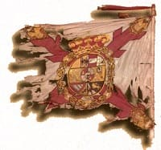
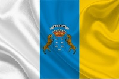
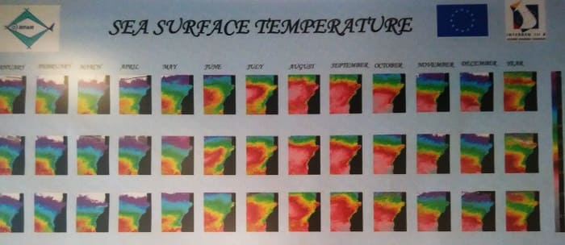

If you click here you will see the complete road map of the province and by areas when moving the mouse.
The island of Gran Canaria is the second largest in extension of the 7 islands that make up the autonomous community of the Canary Islands. This autonomous community is divided into two provinces, one formed by 3 islands of the east that are Lanzarote, Fuerteventura and Gran Canaria and 4 of the west, Tenerife, La Palma, La Gomera and the island of El Hierro.
The eastern islands are called the Arenosas Islands, because their land is rather arid with the exception of Gran Canaria whose western part is reminiscent of the western islands, the mountainous islands, having a higher altitude formation with large forests and mountains.
The island of Gran Canaria is the most inhabited of all, with about 1 million inhabitants. The population is concentrated in the capital and in the eastern cities, counting in its sum between the capital La Palma, the two largest cities, Telde and Vecindario with nearly 600,000 inhabitants. If we add the cities around the airport, the figure would reach 850,000 inhabitants, with some 150,000 inhabitants distributed among all the towns of the island.
It stands out that it is the island with a larger population increase in recent years and the province as one of the provinces with the highest birth rate in Spain.
The island of Gran Canaria is formed by counties, as shown on the map. It has a large road network, although there is no train on the island. The most important roads are the following:
- The GC1, a highway that joins the north and south of the island, being the Maspalomas connection with Las Palmas. In particular to the old part of the capital, ending at the port of the island. Highlights the union with the airport that is in the middle of this highway.
- The GC2, a motorway that leads to the west of the island, to the capital. This connection that goes from Agaete to La Palma is growing to be able to join the town of San Nicolas Village with the capital one day.
- The GC3, highway that connects the GC1 to the entrance of Las Palmas with the GC2 passing through the new neighborhood and connecting with the GC4 that goes towards the interior of the island.
- The GC4, a highway that links the north with the center of the island and is still being extended. It connects with the GC2 in the north and the GC3 in the south.
The island, like the rest of the islands, has a quality bus service. There the buses are called buses. The capital has more than 50 different bus lines and its distinctive color is yellow. This route is perfectly marked and optimized in times. Also unlike other services where the schedule is not fulfilled this service stands out for the punctuality.
For the rest of the island the buses are better equipped and their color is blue, taking it to the GLOBAL company. These buses have more subsidies for the population. Up to 60% per student or free for retired residents on the island.
In addition to the road network is developing a subway bus similar to the monorail inside the capital. Starting from the neighborhood of Santa Catalina, it aims to unite with the west of the capital.
The capital is a pioneer in the service of urban bikes, having a large bike path that connects all the important points and a public bicycle service very used and valued by the Canaries.
Canary Islands flag

In the origins, after the capture of the islands by the Spanish crown banners were used in which the "general flag" was used, which was blue, white and yellow with a red cross, matching the colors with the one of the current flag. At that time it was no more than the flag of the general's Burgundy cross, since the Spanish flag as such would not exist until 1812, with the first Spanish constitution. You can see more in the following link. And this that serves as anecdote since apart from the initial flags after the conquest would not know more concrete flags of the territories until already the XX century.

The current flag is the combination of the flags of the two provinces of the Canary Islands, Tenerife (white and blue) and Gran Canaria (Blue and Yellow). You can carry or not the shield, being symbolic the seven peaks as representation of the islands and the two dogs that go in honor of the name of the Canary Islands since it is attributed to the canary of Canario. However, being only a symbol of Gran Canarias, there are those who reject this shield.
Geographic map
The terrain is completely heterogeneous, with an arid and deserted area and a mountainous and much greener part.
The east has that arid hue partly due to the erosion caused by the wind coming from the east. It is also completely deforested by the action of man in these last 500 years because when the Spaniards arrived the island became a sugar factory, beginning to grow sugar cane throughout the east of the island. To carry out these crops, most of the trees and palm trees that were found were cut down.
In the interior of the island there are several mountainous formations, existing several ravines that in many cases leave boilers, similar to the pits of a volcano. The most famous are in the south and east of the island, being protected. In the center are the highest peaks being the highest Pico de las Nieves, a place that can get snowy during some month of the year. Since in the rest of the island it rarely drops below 0 degrees.
To the west of the peak of the Snows is the Tamadaba National Park and some natural beaches away from the presence of houses or hotels.
As for beaches, it is worth noting that there are several beaches on the island that have the distinctive blue color, being one of the best in Las Canteras, although the water is somewhat colder than the rest and until April they do not start to be enjoyed. complete by the inhabitants of the capital. This is also due to the different climate of the capital with the rest of the island, where clouds are formed that sometimes are for weeks, since they accumulate and do not pass to the west. These clouds are called by the Canaries as Panza de Burro.
To the east and south of the island the most important beach is the Ingles and Maspalomas, there are several beaches somewhat more neglected before the airport and others after the form of coves used by the network of hotels that have been installed in this part.
From Maspalomas to Mogan, the last municipality in the south, there are a multitude of beaches or small coves, many of them artificial and with sand brought from outside that have made tourism and the population from abroad grow, especially in England and Germany. sometimes forming colonies of several thousand inhabitants.
Climatology
The climate of the island is varied, there is a great difference between the coast and the interior of the island. The seasons are not as marked as in the peninsula but the water temperature is influenced by the month of the year where we are.
Here I leave a photo of the temperature of the sea depending on the month we are:

The north of the island that is close to the sea has a temperature slightly lower than that of the south, although once we go in, the weather changes a lot.
You can get to appreciate a difference of climatic sensation of about 20 degrees in winter when moving inside if there is wind. The temperature can decrease by about 10 degrees from the center to the interior being at a lower height. If we go to the mountains, the difference can be appreciated more because in the outside it can reach 16 degrees and in the interior about 0 degrees of minimum, giving the wind a difference of up to double depending on the speed.
It is very normal in the months of February to find places of passage on the island for sheltered people and people in short sleeves due to the difference in climate, but it is also that in the same city the temperature varies during the day depending on the storms.
In the South, on the other hand, the time is usually static, not decreasing the minimum for most of the year of 20 degrees. Therefore, in Gran Canarias it is always possible to look for the sun because it is very rare that it will be covered in the whole island for more than two days.
The capital that is located northwest of the island has a special climate due to nearby mountains that limits the passage of clouds and causes the accumulation of cold air bags that can leave without sun for days. It is very peculiar that sometimes just move 10 kilometers south there is no trace of clouds and the weather is completely different. It could be compared to London in terms of the storm that remains. This is especially noticeable at the end of February until the end of April, although this year, 2018, the year has been so rare that until the middle of June the sun has not been completely allowed.
![[Valid RSS]](https://www.feedvalidator.org/images/valid-rss-rogers.png "Validate my RSS feed")